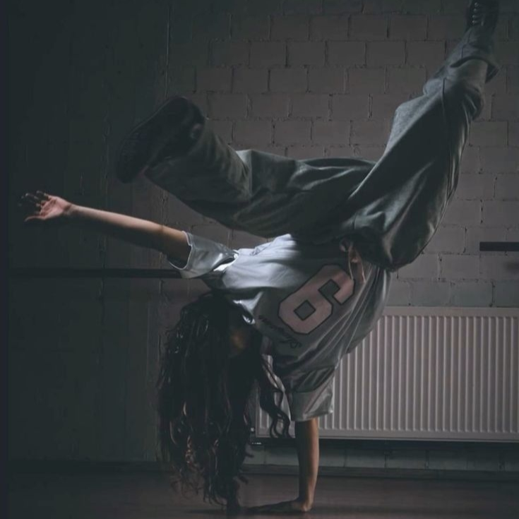
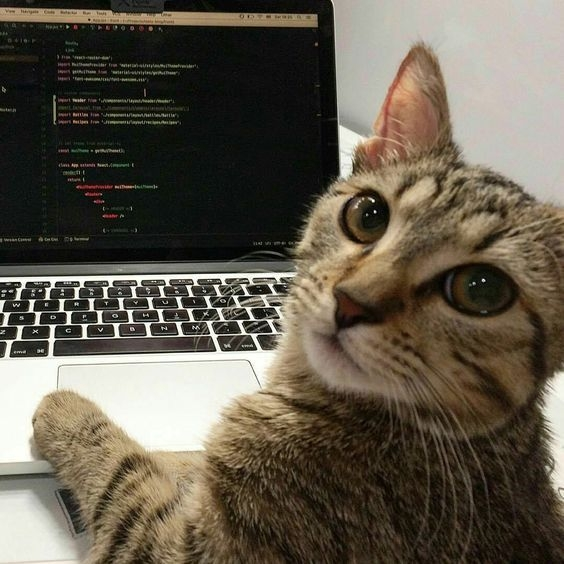
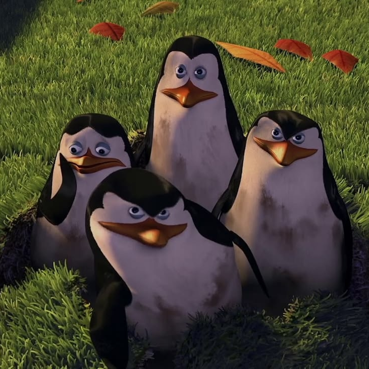

Кратко о моих увлечениях
Своё свободное время я стараюсь проводить активно. Мне нравится проводить время со своими друзьями и семьёй. Люблю узнавать, как работают сложные вещи, и проверять знания на практике. Чтобы отвлечься от дел на какое-то время посещаю тренировки.
Мои увлечения



Основные увлечения
- Фильмы и сериалы:
- Просматривать фильмы и сериалы разных поколений и тем;
- Разбирать интересные моменты на более подробные факты.
- Музыка и танцы:
- Слушать музыку разных стилей;
- Вылавливать из песен ряд битов, под который можно поставить связку танца;
- Тренировки по танцам, помогают разминать тело после долгого нахождения в сидячем положении.
- Изучение программирования:
- Python;
- C++;
- HTML и CSS;
- Базы данных.
- Общение с друзьями:
- Совместные прогулки;
- Общение;
- Вместе отдыхать.